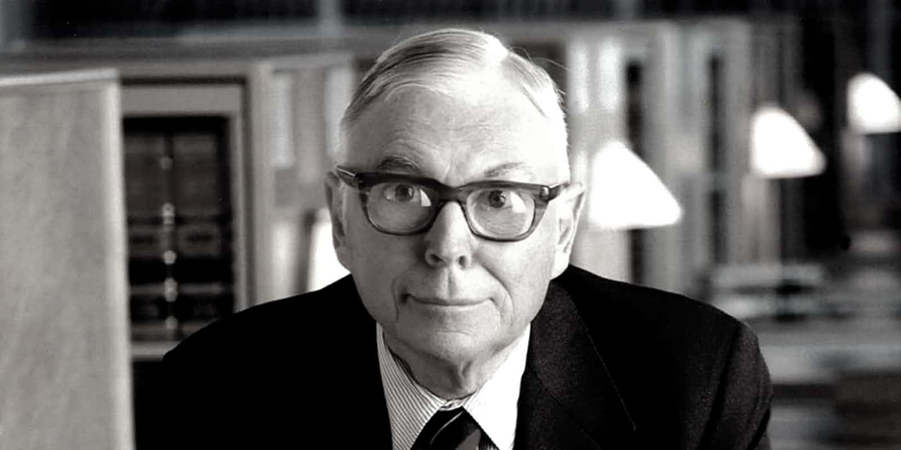

"巴菲特的黄金搭档"——多元思维模型倡导者，逆向思考的大师
查理·芒格（Charlie Munger，1924-2023），伯克希尔·哈撒韦公司副董事长，沃伦·巴菲特的长期合伙人与挚友。芒格以其"多元思维模型"和逆向思考方法闻名，他倡导从不同学科中获取智慧模型以做出更好的投资决策。芒格极大地影响了巴菲特的投资哲学，推动其从"以低价买入普通公司"转向"以合理价格买入优秀公司"，被巴菲特誉为伯克希尔的"建筑师"。
名言内容待补充……